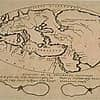

De Aarde is vanaf de Zon gerekend de derde planeet van het zonnestelsel. Hierin behoort ze tot de naar haar genoemde "aardse planeten", waarvan ze zowel qua massa als qua volume de grootste is. Op de Aarde komt leven voor: ze is de woonplaats van miljoenen soorten organismen. Of ze daarin alleen staat is onduidelijk, maar in de rest van het heelal zijn tot nog toe nergens sporen van leven gevonden.
Het standaardsymbool voor de Aarde is een kruis met een cirkel eromheen. Dit symbool staat bekend als het wielkruis, zonnekruis of odinskruis. Hoewel er ook andere betekenissen aan dit symbool zijn toegeschreven, wordt het meestal gezien als een representatie van de vier windstreken op Aarde.